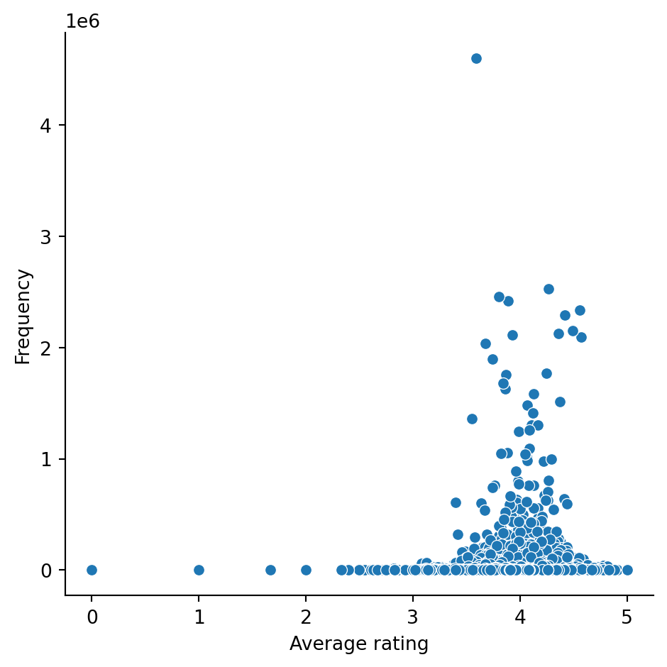
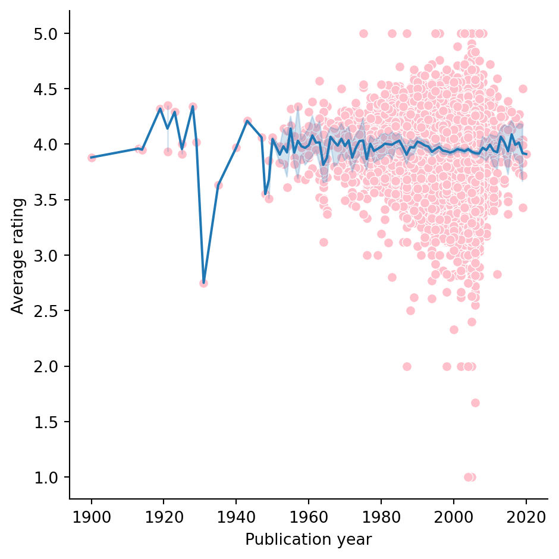
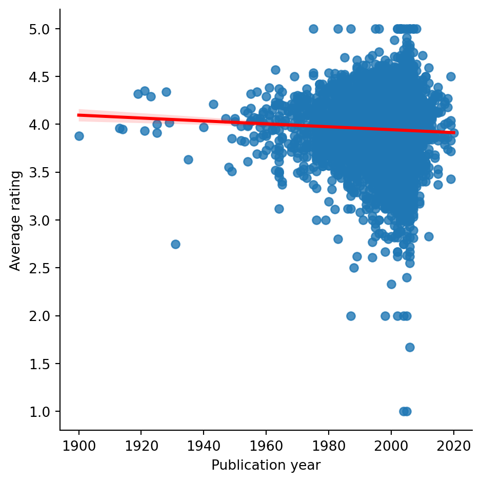
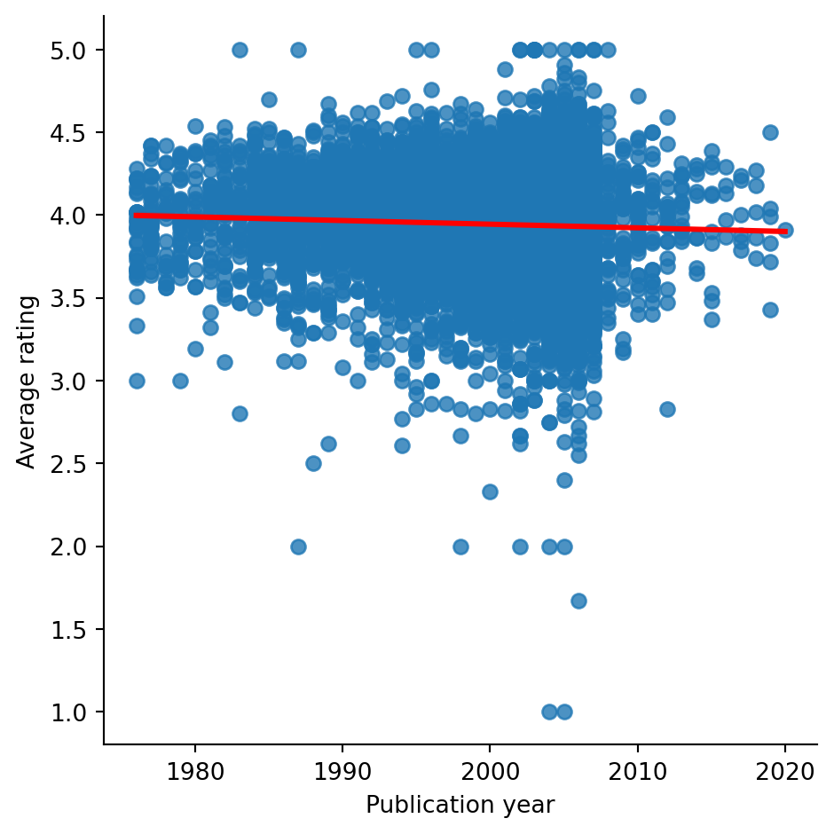
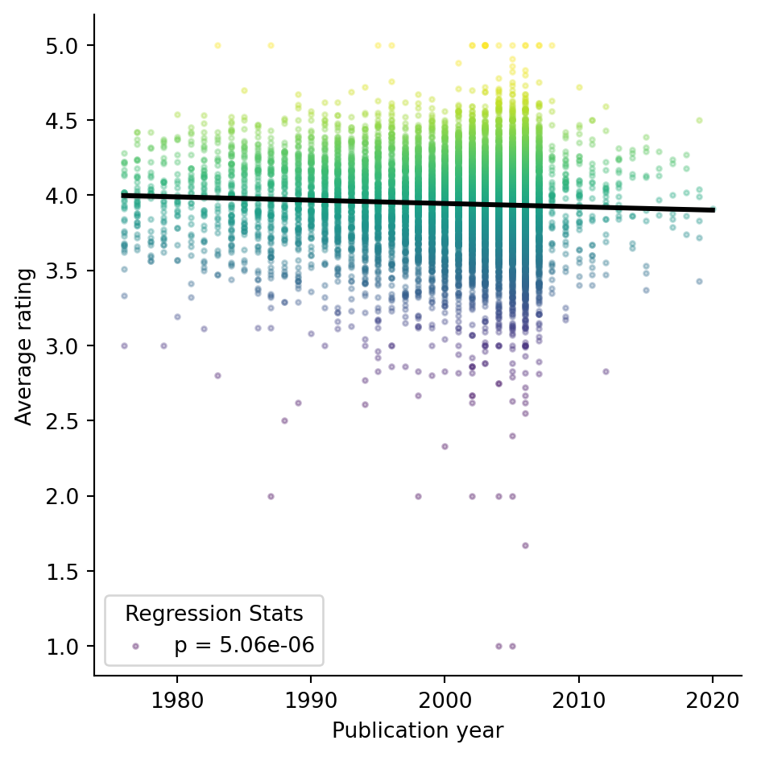

Code
import pandas as pd
import seaborn as sns
import matplotlib.pyplot as plt
import scipy.stats as statsLucy Wright
February 4, 2025
We used Python and Quarto to investigate and present the GoodReads dataset. First we set up the environment.
Then we wanted to know what the data set included by loading the data set, backing it up, and then viewing a small preview of the first two rows.
| Unnamed: 0 | bookID | title | authors | average_rating | isbn | isbn13 | language_code | num_pages | ratings_count | text_reviews_count | publication_date | publisher | |
|---|---|---|---|---|---|---|---|---|---|---|---|---|---|
| 0 | 1 | 1 | Harry Potter and the Half-Blood Prince (Harry ... | J.K. Rowling/Mary GrandPré | 4.57 | 0439785960 | 9780439785969 | eng | 652 | 2095690 | 27591 | 2006-09-16 | Scholastic Inc. |
| 1 | 2 | 2 | Harry Potter and the Order of the Phoenix (Har... | J.K. Rowling/Mary GrandPré | 4.49 | 0439358078 | 9780439358071 | eng | 870 | 2153167 | 29221 | 2004-09-01 | Scholastic Inc. |

Did any books receive a rating of zero stars?
Unnamed: 0 26
bookID 26
title 26
authors 26
average_rating 26
isbn 26
isbn13 26
language_code 26
num_pages 26
ratings_count 26
text_reviews_count 26
publication_date 26
publisher 26
dtype: int64Did any books not receive any ratings?
Unnamed: 0 81
bookID 81
title 81
authors 81
average_rating 81
isbn 81
isbn13 81
language_code 81
num_pages 81
ratings_count 81
text_reviews_count 81
publication_date 81
publisher 81
dtype: int64Some books may have received an average_rating of zero stars, but it doesn’t make sense that some books could have an average_rating without any ratings_count. Therefore we excluded data where the ratings_count was equal to or less than zero.
Look at that plot again
Most people who read seem to think what they’re reading is pretty good.
First let’s find out some basic information about this variable.
What is the earliest publication date?
And the latest?
What does it look like on a scatterplot?
SCARY!!!
Clean it up by excluding the month and day and only keeping the year. We needed to split the “publication_date” data to isolate the year.
# Create a new object that splits the "publication_date" column by the "-" symbol.
split_dates = df['publication_date'].str.split('-', expand=True)
# We did some additional cleaning here to make sure we were dealing with ints and floats
split_dates = split_dates.astype(int)
ratings = df["average_rating"].astype(float)
# Then add those split dates as new columns in our dataframe.
df[["pub_year", "pub_month", "pub_day"]] = split_dates
# try plot again
sns.relplot(df, x = "pub_year", y = ratings, color = "pink")
plt.xlabel("Publication year")
plt.ylabel("Average rating")
# We wanted a line of best fit so we tried sns.linplot
# but quickly recognised that it wasn't what we were hoping for.
sns.lineplot(df, x = "pub_year", y = ratings)
This is nice but it would be better if the line was a regression line to show the trend and answer the question…
Here’s a linear regression model plot.
9.045125408073782e-06
Older books might be better than more modern books…
But it’s possible this effect is being driven by outliers. So lets find out the mean year published, and the values 3SD above and below that date to exclude the outliers.
The mean publication year is….
The standard deviation of pub_year is…
So the window we could look at to exclude outliers is
Did the outcome change? The new p value is…
5.059499118535008e-06
It retains significance! Probably because there are so many data. But the graph is still pretty hard to read because of overplotting. Lets make it pretty.
# make a linear regression model plot look *pretty*
g = sns.lmplot(
data = df, x = "pub_year", y = "average_rating",
hue= "average_rating",
palette = "viridis",
fit_reg = False,
legend = False,
scatter_kws={"s": 5, 'alpha': 0.3})
#overlay a single global regression line
sns.regplot(data = df, x = "pub_year", y = "average_rating", scatter = False, ax = g.axes[0,0], color = "black")
# update axis labels
plt.xlabel("Publication year")
plt.ylabel("Average rating")
# get the p value from before
p_value = lm.pvalue
# show the p value equation on the graph
p_label = f'p = {p_value:.2e}'
plt.legend(title='Regression Stats', labels=[p_label], loc='lower left')